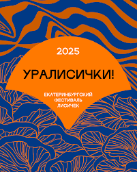

Перейти на главную
Практическое задание №1
Рассказ о екатеринбургском гастрономичном фестивале лисичек

Лисички — самые гастрономичные грибы Урала. Их цвет — в «оранжевом настроении» и символике нашего футбола и баскетбола.
Любовь к лисичкам объединяет Урал со всем гастрономическим миром — от Франции до Китая.
Шеф-повара популярных городских ресторанов предлагают блюда со свежими лесными лисичками
Рестораны фестиваля 2025 года
- Carbonara
- Мимоза
- Большой грузинский
- Osteria Dolce
- Engels
- Grand Buffet
- Шави Ломи
Блюда со свежими лесными лисичками
- Кутаб с лисичками, 530.—
- Хачапури с лисичками, 890.—
- Вафли с лисичками, сметанным кремом и пармезаном, 650.—
- Сковорода с лисичками, сметаной и жареным картофелем, 750.—
- Кальмар с лисичками и цветной капустой, 1260.—
- Салат с лисичками и копченой грудкой, 630.—
- Лангустины с лисичками в сливочно-рыбном соусе, 635.—
Ссылка на Телеграм